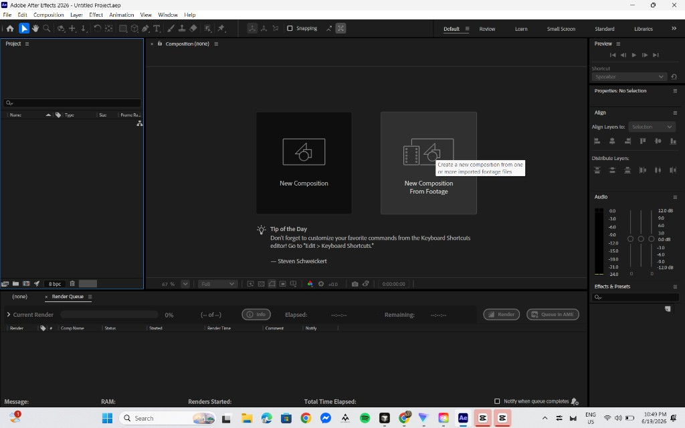
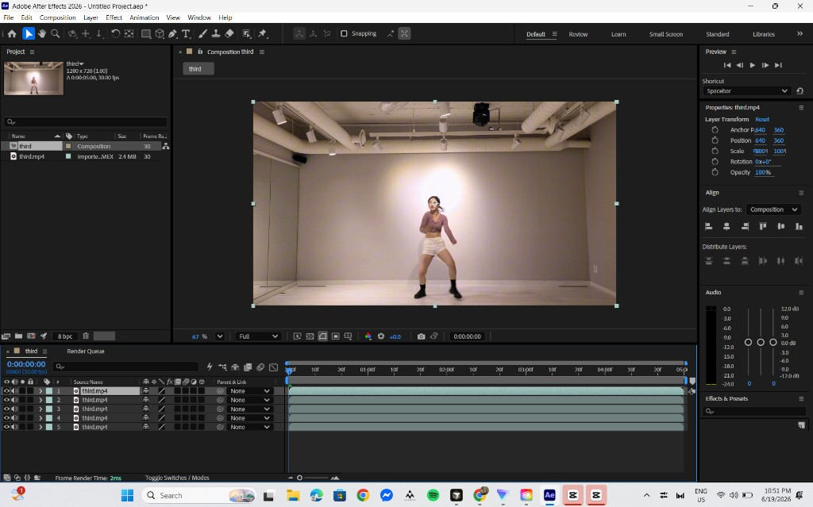

1-minute video rotoscope
Frame-by-frame tracing with an auto-brush workflow in Adobe After Effects—isolate layers, stylize fills, then assemble in Premiere Pro and CapCut.
Reference video
Source footage used as the baseline for tracing, timing, and composition decisions.
Weekly progress
Week-by-week check-ins documenting the full 12-week rotoscope workflow.
Week 1
Week 2
Week 3
Week 4
Week 5
Week 6
Week 7
Week 8
Week 9
Week 10
Week 11
Week 12
Final rotoscope
Completed 1-minute rotoscope export after tracing, compositing, and polish.
Step-by-step workflow
This is the pipeline used for the project: split the source clip into manageable 5-second segments, rotoscope each part in After Effects, render every segment, then stitch the finished passes together in CapCut.
-
Split the video into 5-second clips
In CapCut (or Premiere Pro), trim your reference footage into roughly 5-second segments. Shorter chunks are easier to rotoscope, preview, and re-render if something goes wrong—and they keep After Effects from slowing down on long compositions.
Tip: Export each segment as its own file before moving to After Effects.
-
Create a composition from footage
Import one clip into After Effects, select it in the Project panel, then choose New Composition From Footage. After Effects builds a comp that matches the clip’s resolution, frame rate, and duration automatically.

-
Duplicate layers for each element
Select the footage layer in the timeline and press Ctrl + D (Windows) or Cmd + D (Mac) to duplicate it. Make one copy per part you plan to isolate—shirt, pants, skin, hair, shoes, background, and so on.

-
Open a layer and activate Roto Brush
Double-click the layer you want to edit to open the Layer panel. Press Alt + W to switch to the Roto Brush tool, then paint over the area that belongs on that layer. After Effects tracks the selection forward and backward through the clip.
Tip: Hold Alt while brushing to subtract from the selection and clean up edges.
-
Isolate each part on its own layer
Repeat the Roto Brush pass on every duplicated layer, masking only the element that layer represents. Work one layer at a time—background and large shapes first, smaller details like hair and shoes last—so each matte stays accurate.
-
Add a fill color and freeze the rotoscope
With the layer selected, go to Effect → Generate → Fill and choose the solid color for that element. In the Effect Controls panel, click Freeze on the Roto Brush effect to lock the matte before moving on to the next layer.
-
Repeat for every remaining layer
Continue the same cycle—Roto Brush, Fill, Freeze—for each duplicate until every subject part has its own colored layer. Stack layers from back to front so the composite reads clearly in the Composition panel.
-
Render the composition
When a 5-second comp is finished, choose File → Export → Add to Render Queue. Set your output format (H.264 / MP4 works well), pick a save location, then click Render. Repeat steps 2–8 for each clip segment.
-
Assemble the final edit in CapCut
Import all rendered clips back into CapCut, place them in timeline order, and join them into one continuous sequence. Add titles, text, transitions, and any final effects, then export the completed 1-minute rotoscope.
Disclaimer: This project was produced for academic purposes.